The baked Blender renders (hub heroes, title, exam hall, event objects, shop tiles) ship as ASTC 6×6. This compares stronger settings: the APK size of a clean build for each, and the pixels the phone's GPU really decodes, side by side with today's.
Today's development APK, from a clean build. Rebuilt three times at the shipped settings: the same size each time, within 8 bytes.
The 72 baked renders in the build, out of 15.8 MB of textures and 33.6 MB of user assets.
The recommendation: scenes and event objects to ASTC 8×8, shop tiles left alone. No difference at phone size.
The most this measured: everything at 8×8 and the daytime renders left out, which needs a decision first.
Every row is its own clean Android development build of the same commit. Only the Android/iOS format or max size of the baked art changes. "Art in build" is the renders' total in Unity's build report. 1 MB = 1,000,000 bytes.
| Option | What changes | APK MB | Saving | Art in build MB | At phone size |
|---|---|---|---|---|---|
| Today | Everything ASTC 6×6, max 2048 | 114.63 | – | 11.38 | baseline |
| A | Everything ASTC 8×8 | 110.20 | −4.43 (3.9%) | 6.39 | No visible change at phone size |
| A without shop tiles recommended | Scenes and event objects 8×8; the 45 shop tiles stay 6×6 | 111.08 | −3.55 (3.1%) | 7.34 | No visible change at phone size |
| A + no day renders | Everything 8×8 and the 10 daytime renders left out | 108.50 | −6.14 (5.4%) | 4.11 | Needs a decision on the day renders |
| B · 8×8 | Scenes 6×6; event objects and all shop tiles 8×8 | 113.33 | −1.30 (1.1%) | 9.97 | No visible change at phone size |
| B · 8×8, store tiles only | As above, the 35 wardrobe tiles left at 6×6 | 114.01 | −0.62 (0.5%) | 10.71 | No visible change at phone size |
| B · 10×10 | Scenes 6×6; event objects and all shop tiles 10×10 | 112.75 | −1.89 (1.6%) | 9.32 | Blocky edges on tiles and objects |
| C · max 1024 | Scenes 6×6 but scaled to 1024 px wide | 112.30 | −2.34 (2.0%) | 8.78 | Softer than 8×8, for less saving |
| C · heroes 8×8 | Only the 16 hub heroes 8×8 | 112.14 | −2.49 (2.2%) | 8.47 | No visible change at phone size |
| C · no day renders | Everything 6×6; the 10 daytime renders left out | 111.40 | −3.23 (2.8%) | 7.30 | Nothing on screen changes today |
The APK shrinks by a little less than the art does, because the APK's zip compression already
squeezed the ASTC data by about 12%. Most of the development APK is code: libil2cpp.so alone is
71 MB of it, so the same megabytes are a larger share of a release build.
| Group | Files | Size at 6×6 | At 8×8 | Notes |
|---|---|---|---|---|
| Hub heroes, dusk | 8 | 3.31 MB | 1.85 MB | 1248 × 775 each, shown at about 998 × 620. |
| Hub heroes, day | 8 | 3.31 MB | 1.85 MB | Only drawn in a light theme, and the game has no way to switch to one yet. |
| Title, dusk and day | 2 | 1.07 MB | 0.61 MB | 1248 × 1010. |
| Exam hall banner, dusk and day | 2 | 0.46 MB | 0.26 MB | 1120 × 483. |
| Event objects | 7 | 1.06 MB | 0.60 MB | 1120 × 318, one for both themes. |
| Store tiles | 10 | 0.48 MB | 0.27 MB | 480 × 230: detector, pills, shirts, badges. |
| Wardrobe tiles (M131) | 35 | 1.69 MB | 0.95 MB | 480 × 230. Owned by the store and wardrobe work, so they are listed apart and nothing here changes them. |
The daytime renders (8 heroes, title and exam hall) are 4.6 MB of the 11.4 at 6×6. Leaving them out saves 3.23 MB of APK at today's settings, or 1.70 MB on top of all-8×8. They are not loaded while the theme is dark, so they cost download size only, not memory. The question for you: should they ship before a light theme exists? They were measured, not removed.
Each picture was imported with the setting shown, and the GPU decoded the real ASTC texture. The texture was then drawn at the size the phone shows it (renders are made at 1.25× that) and read back. "Source" is the same path with no compression. The first row of each subject is phone pixels 1:1. The second is a part of it at 2× with nearest-neighbour, so every pixel shows. The dB figure is the whole picture's PSNR against the source at phone size: higher is closer. On a laptop screen, 1:1 is already larger than on a phone, whose pixels are about three times smaller.
1:1 phone pixels
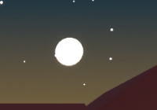
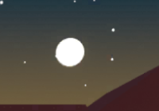
2× zoom, nearest neighbour
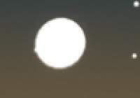
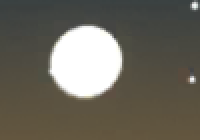
1:1 phone pixels
2× zoom, nearest neighbour
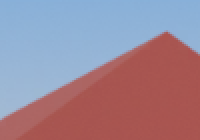
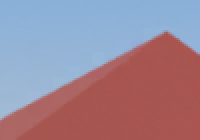
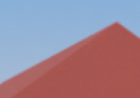
1:1 phone pixels
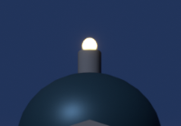
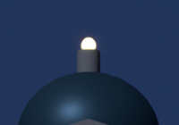
2× zoom, nearest neighbour
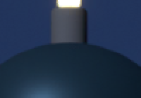
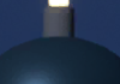
1:1 phone pixels
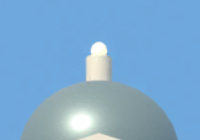
2× zoom, nearest neighbour
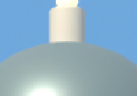
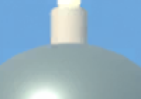
1:1 phone pixels
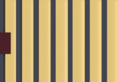
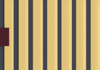
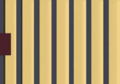
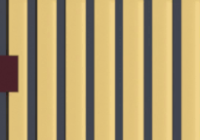
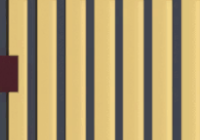
2× zoom, nearest neighbour
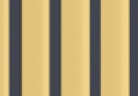
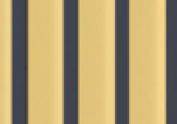
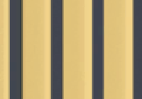
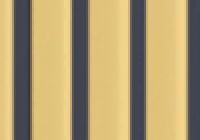
1:1 phone pixels
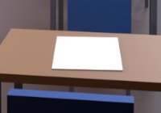
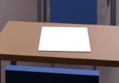
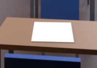
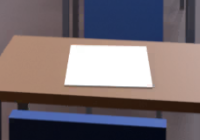
2× zoom, nearest neighbour
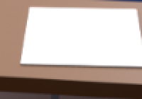
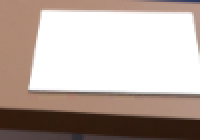
1:1 phone pixels
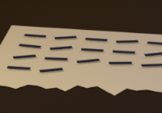
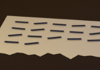
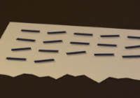
2× zoom, nearest neighbour
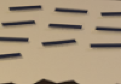
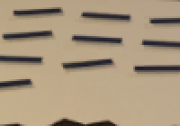
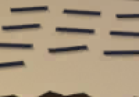
1:1 phone pixels
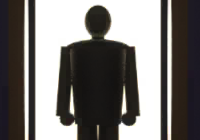
2× zoom, nearest neighbour
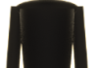
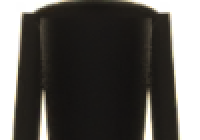
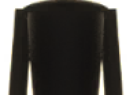
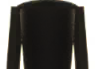
1:1 phone pixels
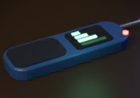
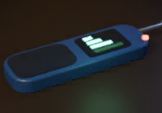
2× zoom, nearest neighbour
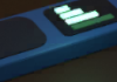
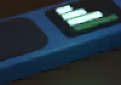
1:1 phone pixels
2× zoom, nearest neighbour
Banding shows first in smooth skies and dark glows, so these smooth areas are stretched to six times their contrast around the source's average colour. At normal contrast every column here looks the same. This is the stress test, not what a player sees.
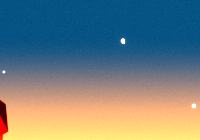
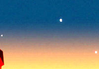
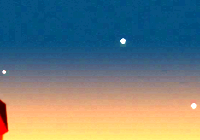
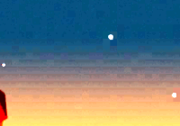
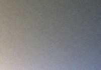
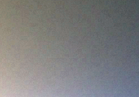
| PSNR at phone size, dB | 6×6 today | 8×8 | 10×10 | 6×6 @1024 | 8×8 @1024 |
|---|---|---|---|---|---|
scene_maple_dark | 50.0 | 46.6 | 43.8 | 44.3 | 42.7 |
scene_maple_light | 49.0 | 45.8 | 42.8 | 44.3 | 42.5 |
scene_stateuni_dark | 49.6 | 46.4 | 43.3 | 41.9 | 40.9 |
scene_stateuni_light | 50.4 | 47.5 | 44.2 | 46.0 | 44.1 |
scene_national_dark | 50.0 | 46.3 | 43.5 | 39.5 | 38.8 |
scene_national_light | 49.1 | 45.0 | 41.4 | 42.9 | 41.1 |
scene_title_dark | 49.0 | 45.6 | 42.7 | 41.9 | 40.6 |
scene_examhall_dark | 46.4 | 42.5 | 39.4 | 40.4 | 38.8 |
prop_note | 51.8 | 50.0 | 47.7 | 47.1 | 46.5 |
prop_person | 50.6 | 48.0 | 45.0 | 41.6 | 41.2 |
tile_signal_detector | 47.9 | 44.6 | 42.3 | 47.9 | 44.6 |
tile_top_blazer | 50.6 | 47.9 | 45.2 | 50.6 | 47.9 |
tile_badge_gold | 47.6 | 44.9 | 41.6 | 47.6 | 44.9 |
PSNR depends on the picture, so compare across a row, not down a column. A tile's "@1024" figure equals its full-size one, because tiles are smaller than 1024 already.
e0d4156. It changes one line in BakedArtImporter (tiles stay at 6×6, everything else goes to 8×8) and the Android/iOS format in 28 .meta files. Its build came out at exactly the measured size.candidate.glb is the biggest single asset. It is a 3.2 MB file that becomes 10.6 MB in the build, mostly animation (10.4 MB in all). It comes in through glTFast, which brings the baked keyframes in as they are. Lowering the bake rate at export, or reducing the keyframes, would very likely save more than any texture setting here. It belongs to the candidate and wardrobe work, so it was not touched or measured.BuildAndroid.Development, one worktree of main eed4d45. The option comes from an environment variable read by TextureCompressionOptions.cs on the branch. Without it, the shipped settings apply.Builds/Android. Unity copies the APK out of Gradle's output in Library/Bee/…/launcher/build/outputs/apk, and Gradle repacks that file incrementally, so a smaller build kept the old file's length. The first round of sizes was wrong for this reason. Every size here comes from a build with Gradle's packaging output deleted, and the sum of the zip entries agrees with it.CaptureQuality imports copies of the renders at each format, draws the GPU texture (ASTC, decoded by the GPU) to a render target, and reads it back. Read back at full size, the uncompressed path matches the source PNG exactly, so the colour handling adds no error of its own.Tools/texcomp/run_all.sh, then crops.py, metrics.py and buildreport.py on the results.